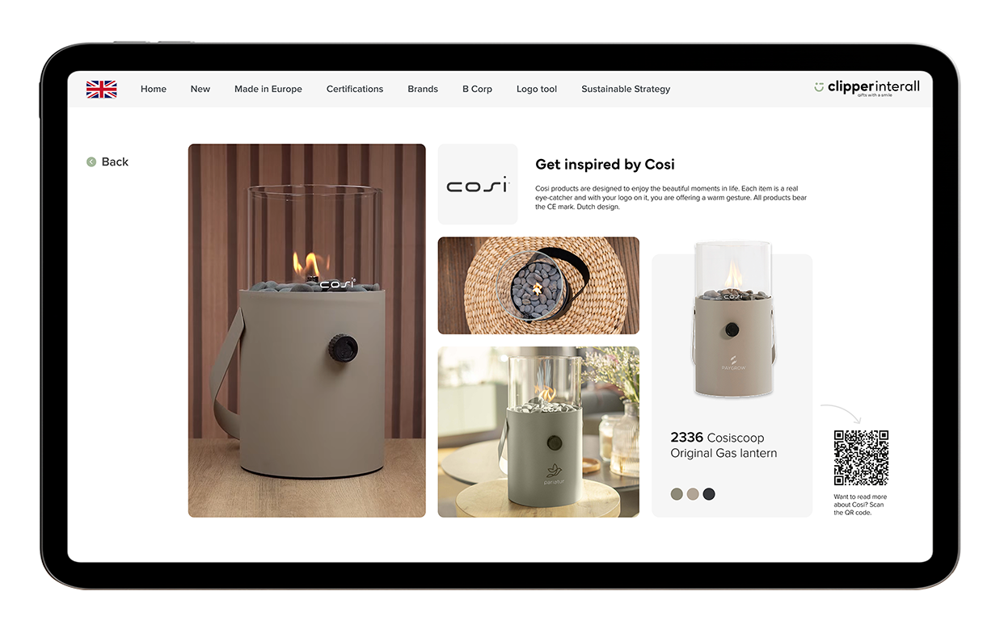
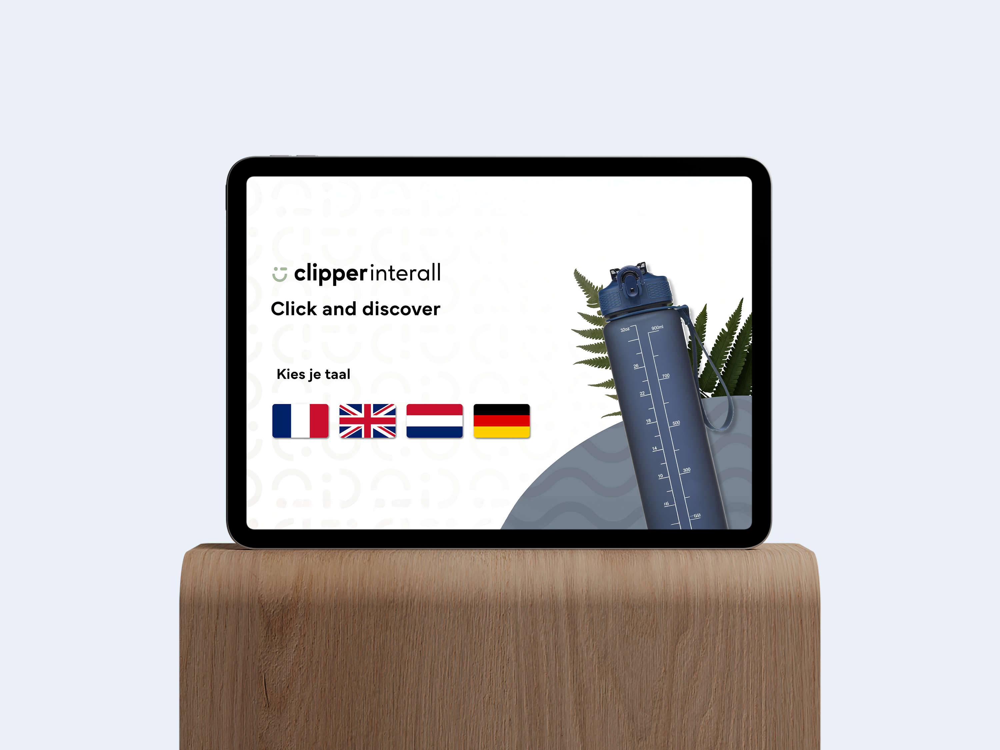
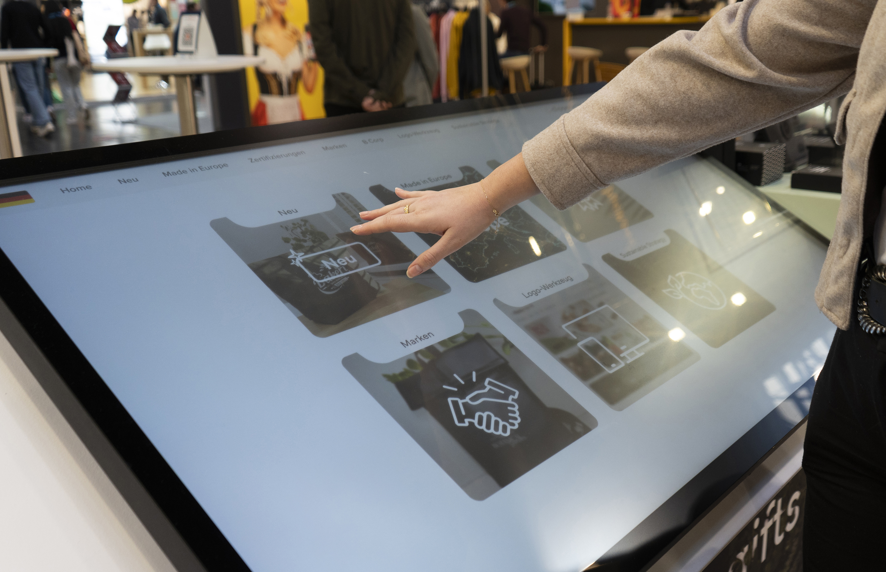
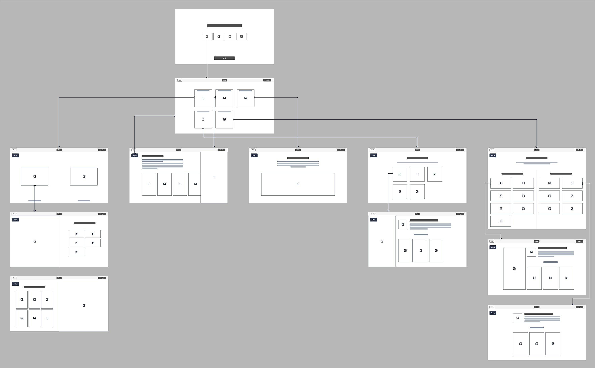

Beurs portaal
Wireframing en design - 2025

Wireframing en design - 2025

Clipper Interall is ieder jaar te vinden op meerdere promotionele product beurzen. Op de beurzen stellen ze veel producten ten toon die Clipper Interall in het assortiment heeft. Maar buiten de producten willen ze ook interactieve content over Clipper Interall laten zien. Denk aan video’s en online catalogi.


In het kader van interactiviteit wordt ieder jaar de vraag gesteld: Hoe kunnen we meer bezoekers aantrekken en ze meteen een kort beeld geven over wie Clipper Interall is. Voor de PSI beurs van 2025, is er door marketing aangegeven dat ze een soort portaal willen waarop informatie te vinden is over Clipper Interall, hierdoor zouden beursbezoekers een korte kijk krijgen in wie Clipper Interall is. Dit portaal zou ook ondersteuning kunnen bieden aan de sales medewerkers die op de stand staan.

Samen met marketing en de e-commerce manager zijn er verschillende
criteria opgesteld die in het portaal moeten. Denk hierbij aan
verschillende talen beschikbaar hebben, nieuwe producten en onze
merken laten zien en het moest een koppeling hebben naar de Clipper
Interall website.
Vanuit deze criteria ben ik gaan schetsen en zijn er
wireframes gemaakt. Omdat het uiteindelijke portaal in Figma gemaakt
zou worden, was het belangrijk dat in de wireframe fase, de
navigatie van dit portaal goed zou zijn. Zodat dit makkelijk omgezet
kon worden naar een design. Bij het ontwerpen van het uiteindelijke
portaal is er veel beeldmateriaal gebruikt van de toenmalige
website, zodat het Clipper Interall gevoel goed overgebracht zou
worden.


Op het startscherm zijn bewegende elementen te zien, om de aandacht
te trekken van beursbezoekers. Dit zou een initiële interesse moeten
wekken. Als ze eenmaal in het portaal zitten, zijn er op de andere
pagina’s GIFs te zien van merken en producten, om de aandacht van de
bezoekers te behouden.
Uiteindelijk is er een volwaardig portaal opgeleverd met
Figma, dat tentoongesteld is op de PSI beurs op twee grote
touchscreens. Meerdere bezoekers werden aangetrokken tot de
touchscreens vanwege de bewegende elementen en de bezoekers namen
hun tijd om het portaal te bekijken.
PREV